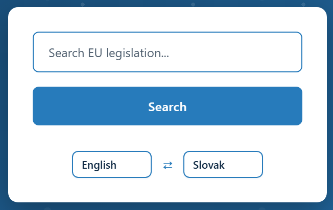
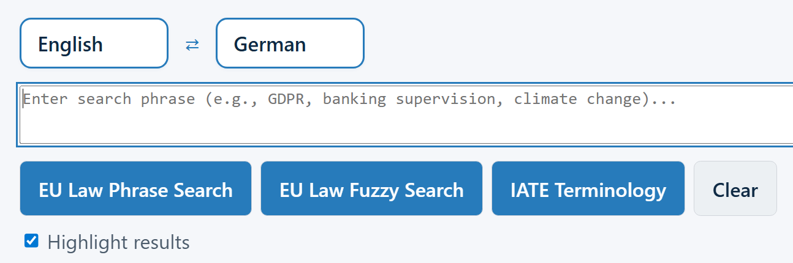
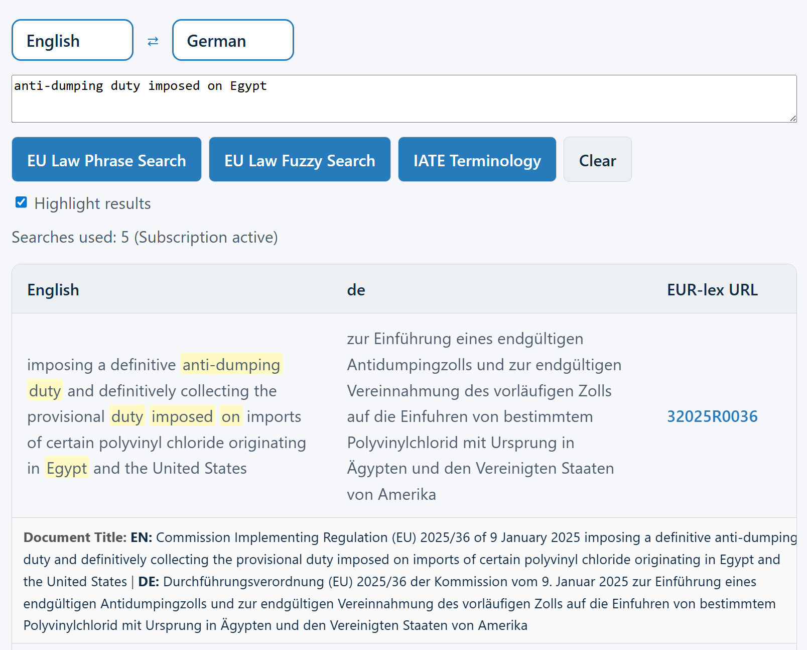
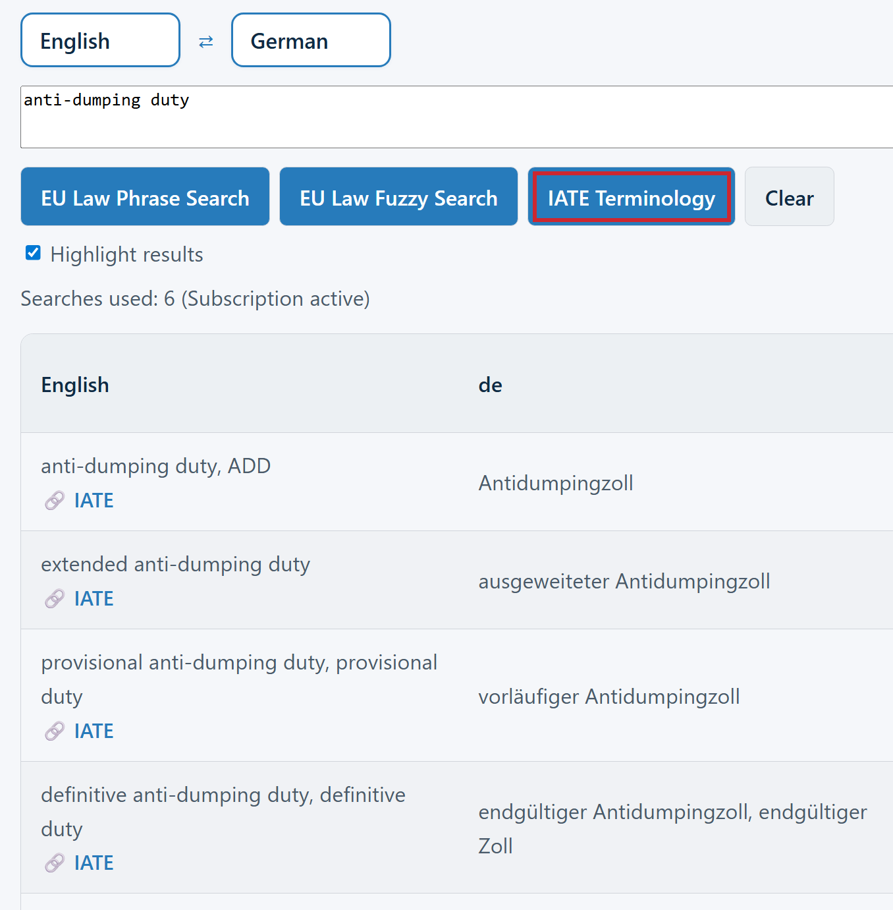
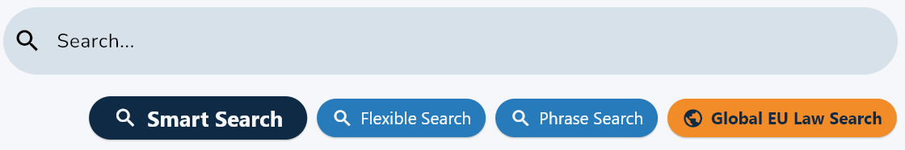
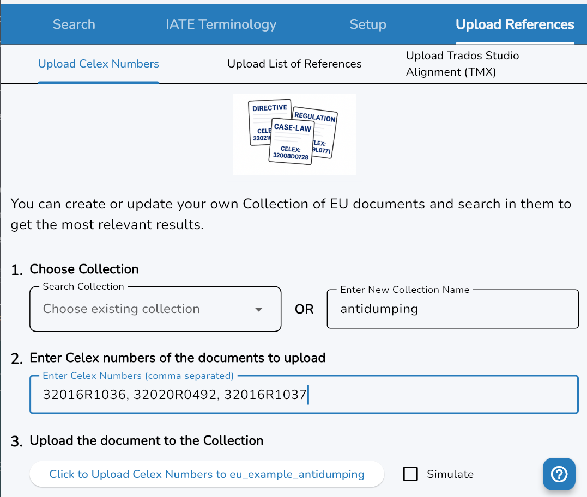
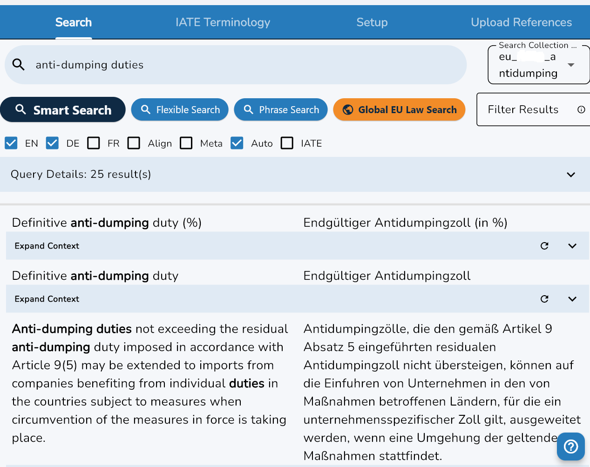
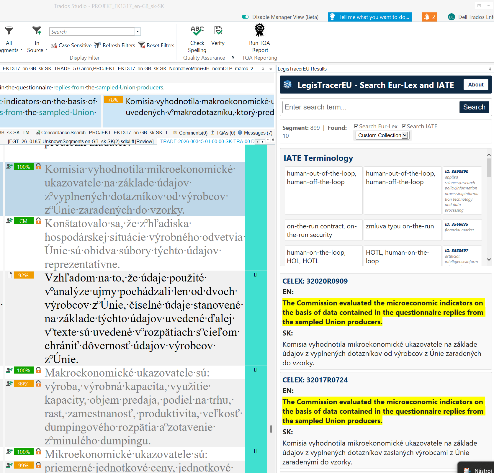

Search EU Law Directly in Your Browser
The web interface is the fastest way to get started — no download, no installation. Open the search page in any browser, select your source and target languages, and enter a phrase or sentence to look up. LegisTracerEU will search the full body of EU law and return highlighted matches and direct links to the source documents on EUR-Lex, where you can see the results in wider context.
Select Working Languages
Click to open the Search page and choose your source and target language from all 24 official EU languages.

Enter Search Phrase and Click Search
Type or paste any word, phrase, or sentence fragment into the search box. Start with Fuzzy Search to see more results or use Phrase Search for exact matches.

View Results
Each result shows the matching passage in both languages with your search terms highlighted in context. Click the EUR-Lex link for the full document.

IATE Terminology
To search for official EU terminology, click Search IATE. Look up approved terms with definitions, domain classifications, and multilingual equivalents.

Try the Web Search Now
Simple email registration for the free trial — get 7 searches per day.
Open Web Search View PricingFull Power, No Browser Required
The LegisTracerEU Windows desktop application provides all the features of the service in a fast, dedicated interface — no browser needed. It is available for free download from the Microsoft Store and works immediately in trial mode. After entering your subscription email and passkey in the Setup tab, the full feature set unlocks.
The app is organised into four main tabs: Search, IATE Terminology, Setup, and Upload References. Search results are displayed in a multi-column, multi-language layout with up to three language columns side by side, plus an integrated IATE sidebar for immediate access to the official EU terminology.
Search Modes
- Smart Search — combines phrase and fuzzy matching automatically; this is the preferred search option
If it does not give suitable results, try other search strategies using:
- Flexible Search — tolerant multi-word matching
- Phrase Search — exact or near-exact phrase search
These three options search in the Collection selected in the Search Collection dropdown for assignment-specific, most relevant results.
- Global EU Law Search — broadest search across the entire EUR-Lex database

Use Custom Collections for the Most Relevant Results
Go to the Upload References tab and create your own Custom Collection.

Example
Let's say you are working on an assignment concerning anti-dumping duties on glass fibre fabrics. To get the most relevant results, create a Custom Collection containing these documents — enter the Celex numbers under Upload References:
-
32016R1036
Regulation (EU) 2016/1036 on protection against dumped imports from countries not members of the European Union -
32016R1037
Regulation (EU) 2016/1037 on protection against subsidised imports from countries not members of the European Union -
32020R0492
Commission Implementing Regulation (EU) 2020/492 imposing definitive anti-dumping duties on imports of certain woven and/or stitched glass fibre fabrics originating in the People's Republic of China and Egypt
Click one of the Search buttons and get the most relevant results based on the documents in your Custom Collection.

Download the Windows App
Free trial — just enter your email to start. Available in the Microsoft Store.
Download from Microsoft Store Installation GuideEU Law Search Inside Your CAT Tool
The LegisTracerEU plugin for Trados Studio 2022 and later brings EU law and IATE terminology search directly into your translation environment. The plugin panel docks anywhere in the Studio layout and operates without switching windows or applications. It is signed by RWS and can be installed easily by following this guide.
As you navigate through segments in Trados Studio, the plugin can automatically fire a search for the current segment content. You can also select any text, right-click, and choose LegisTracerEU Search, or assign a keyboard shortcut (e.g. Alt+Down Arrow) for instant access without leaving the keyboard. Results from EUR-Lex and IATE appear in the results panel.
Automatic Segment Search
- Fires a search each time you navigate to a new segment
- Results appear in the panel without any manual action
- Works with your active Custom Collection or full corpus
- Panel can be docked, floating, or pinned in Studio
Manual Search Options
- Select any text → right-click → LegisTracerEU Search
- Configurable keyboard shortcut (recommended:
Alt+↓) - Type any phrase directly in the results panel
- Switch between EUR-Lex search, IATE, or Custom Collection

Install the Trados Plugin
Signed by RWS. Compatible with Trados Studio 2022 and later.
Plugin Installation Guide View Pricing